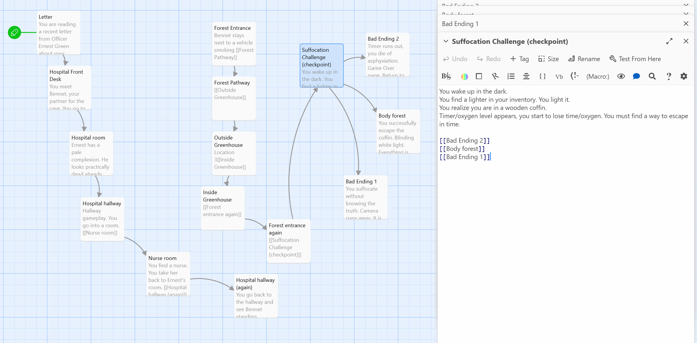
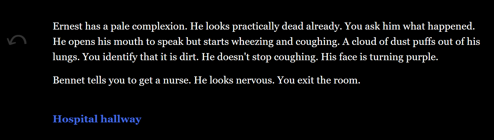

Programmer
Gameplay video of The Seed
The Seed was a game created during the 48 hours of Global Game Jam 2023. It is a point-and-click narrative game inspired by the game Bad Dream Coma. The game tells the story of a rookie detective investigating a serial killer case that targets the police and related personnel.
I teamed up with one other artist to work together during this game jam. I worked mostly as a programmer and helped with some of the UI art. The mechanic of this game was inspired by Bad Dream: Coma developed by Desert Fox. The game engine we used was Unity, and we designed the game's narrative together. Unfortunately, we were not able to finish the game in 48 hours, given the scope of the script. It was a rush for both the artist and me as the programmer due to limited skills at the time. However, I was able to learn a lot by consulting the local Jam host, the programming lead at WolverineSoft Studio, who taught me a lot of shortcuts including prefab creations in Unity. Narrative wise the theme of this game jam was "Seed." My partner and I didn't want to take the words too literally and instead thought about the symbolism of the seed, which has enormous growth potential. Thus, in the end, our game contains overall themes of corruption, atonement, and the cyclical nature of justice. The plot, which draws inspiration from the myth that Sakura trees become stronger with blood, centers on an elderly man who has become disillusioned with systemic corruption and targets young officers whom he believes to be morally degenerate. The tree signifies the flowering of justice in the story, while the "seed" stands for buried truth. In the good ending, the protagonist reveals the truth and exemplifies justice by escaping their symbolic coffin. In the bad ending, they stay buried, turning into a seed that never sprouts, signifying unrealized potential. In theory, we hoped to create a game that allows people to reflect on the pursuit of truth and justice and let the protagonists try to overcome their situations based on player choice and investigation. Overall, this was a very valuable experience for me.
Here is a flowchart for the narrative design using twine.
 